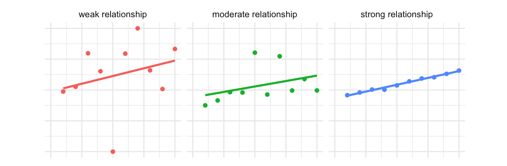

# A tibble: 10 × 5
region state year crime_type count
<chr> <chr> <dbl> <chr> <dbl>
1 East Malaysia Sabah 2017 rape 211
2 West Malaysia Terengganu 2017 aggravated assault 130
3 West Malaysia Terengganu 2017 rape 64
4 West Malaysia Melaka 2017 rape 69
5 West Malaysia Pahang 2017 armed robbery 1
6 West Malaysia Perak 2017 rape 95
7 West Malaysia Perak 2017 aggravated assault 380
8 West Malaysia Johor 2017 rape 196
9 West Malaysia Kedah 2017 unarmed robbery 490
10 West Malaysia Melaka 2017 unarmed robbery 58915 Presenting spatial data without maps
Learn how to use tables and charts to effectively communicate information about spatial data, and when these techniques might be more effective than using maps.
To load the interactive tutorial for this chapter, copy and paste the following code into the RStudio console:
and press Enter.
15.1 Introduction
Making maps is the core of analysing spatial data. But just because a particular dataset has a spatial element to it does not mean that a map is the best way to present that data. In this tutorial we will learn some other techniques for presenting data that can be more effective than maps for answering certain questions about spatial data.
As with so much in spatial analysis, whether it is best to make a map or use some other technique to convey information will depend on the circumstances. When you decide how to communicate information about the data you are analysing, you will need to consider the questions you are trying to answer, the audience that you are communicating to, what they will be using the information for and in what circumstances they will be using it.
While the best choice of how to communicate spatial information will depend on the circumstances, there are a few instances in which maps are typically not the best way to communicate your data. These are:
15.1.0.1 When you only need to convey a handful of pieces of information
Maps are very effective for communicating detailed information, such as the density of crime across thousands of cells in a KDE grid. But to do this, maps typically encode information into aesthetics such as colour, size and so on. This is necessary for communicating large amounts of information, but it makes the connection between the data and the visual representation of the data less direct. If you only need to communicate a small amount of information, there is less justification for forcing your audience to mentally translate the aesthetic into whatever it represents.
For example, if you wanted to show the number of violent and sexual offences in each of the seven districts in Northamptonshire in England, a choropleth map is less clear than a bar chart (for example, in being able to decipher if there were more offences in Kettering or in Wellingborough).

A map might be a useful addition to the bar chart in this case if you are trying to communicate information to people who are not familiar with the locations of the districts. In that case, we might want to add a small reference map to help people understand which area is which:

But in most circumstances in which you create crime maps, you will be creating them for an audience (such as local police officers) that already has sufficient knowledge of the area and so an inset map such as this would not be needed. In that case, a bar chart will probably be more effective at showing this information than a map would be.
15.1.0.2 When you need to convey several different things about one place
Maps are generally most effective when they show a single piece of data about each place. For example, a choropleth map shows a single shade of colour for each area on the map to represent a single value, such as the frequency of crime in that area. If you wanted to show the frequency of burglary and the frequency of robbery in the same area on a map, this would be quite hard. So if you need to convey multiple different things about each place, it is generally best to do this in a table or chart, rather than a map.
One exception to this is when you present multiple maps side by side, each showing a single thing about an area. These are called small multiple maps and we will learn about them in a future tutorial.
15.1.0.3 When the geographic relationship between places on the map is not the most important thing about them
Maps emphasise the spatial relationship between different places, but they do this at the expense of making non-spatial relationships between those places less obvious. If the spatial relationships are the most important thing that you want to convey, a map makes sense. For example, a hotspot map is often a very good way to communicate where crime is most concentrated. But in other cases the geographic relationships between variables will be much less important. For example, if you wanted to show the relationship between the amount of crime in an area and the level of poverty there, a scatter plot would probably be a more-effective way to do this than a map would be.
15.2 Tables
Well-designed tables can be a very effective way of communicating information, whereas badly-design tables can be confusing and even lead your audience to give up trying to engage with the information you’re trying to communicate.
Tables used to present information almost always show only a summary of the available data, so the first step in preparing a table is to wrangle the data into the right format. In a previous tutorial we learned about the summarise() function from the dplyr package that we can use to produce summaries of rows of data.
To learn about creating a good table for displaying summary data in a report, we will use the example of the frequency of different types of violence in the different states of Malaysia in 2017. This data is already loaded in an object called violence. We can get a feel for the data by looking at a random sample of rows using the slice_sample() function function from the dplyr package (remember dplyr is loaded automatically by tidyverse).
The output of slice_sample() looks acceptable as a table, especially if it is included in a Quarto document, but readers of our reports probably don’t want to know the type of each variable (underneath the variable names) and won’t want to page through the table if there are more rows or columns than can fit in the available space.
15.2.1 Making data wider for presentation
One issue with printing the violence object as a table is that it has 70 rows, so it will take up a lot of space on a page or screen. We can make the data more compact by converting it from long format to wide format. In the previous tutorial on tidying messy data we learned that data are often easier to analyse in long format. But it is often better to present data in a table in wide format.
To convert the table to a wider format we can use the pivot_wider() function from the tidyr package, just was we used the corresponding pivot_longer() function to tidy data in the messy-data tutorial. To make data wider, we specify a single column in the data to use as the names of multiple new columns using the names_from argument and a column to use as the values for the new columns using the values_from argument.
# A tibble: 14 × 8
region state year `aggravated assault` `armed robbery` murder rape
<chr> <chr> <dbl> <dbl> <dbl> <dbl> <dbl>
1 East Malaysia Sabah 2017 230 0 36 211
2 East Malaysia Sarawak 2017 368 3 27 150
3 West Malaysia Johor 2017 614 1 66 196
4 West Malaysia Kedah 2017 364 2 21 119
5 West Malaysia Kelant… 2017 252 2 13 114
6 West Malaysia Kuala … 2017 651 4 37 132
7 West Malaysia Melaka 2017 176 1 7 69
8 West Malaysia Negeri… 2017 241 2 14 91
9 West Malaysia Pahang 2017 188 1 16 163
10 West Malaysia Perak 2017 380 4 35 95
11 West Malaysia Perlis 2017 47 0 2 30
12 West Malaysia Pulau … 2017 275 0 17 80
13 West Malaysia Selang… 2017 1108 14 83 321
14 West Malaysia Tereng… 2017 130 0 5 64
# ℹ 1 more variable: `unarmed robbery` <dbl>Now the table has only 14 rows, which makes it much easier to present both on screen and in print. We can also see that the year column is constant (all the values are the same), so we can remove this using the select() function from dplyr. We can also use select() to change the order of the columns from left to right so that the two types of robbery appear next to each other.
violence |>
pivot_wider(names_from = crime_type, values_from = count) |>
select(
region, state, murder, rape, `aggravated assault`, `armed robbery`,
`unarmed robbery`
)# A tibble: 14 × 7
region state murder rape `aggravated assault` `armed robbery`
<chr> <chr> <dbl> <dbl> <dbl> <dbl>
1 East Malaysia Sabah 36 211 230 0
2 East Malaysia Sarawak 27 150 368 3
3 West Malaysia Johor 66 196 614 1
4 West Malaysia Kedah 21 119 364 2
5 West Malaysia Kelantan 13 114 252 2
6 West Malaysia Kuala Lumpur 37 132 651 4
7 West Malaysia Melaka 7 69 176 1
8 West Malaysia Negeri Sembi… 14 91 241 2
9 West Malaysia Pahang 16 163 188 1
10 West Malaysia Perak 35 95 380 4
11 West Malaysia Perlis 2 30 47 0
12 West Malaysia Pulau Pinang 17 80 275 0
13 West Malaysia Selangor 83 321 1108 14
14 West Malaysia Terengganu 5 64 130 0
# ℹ 1 more variable: `unarmed robbery` <dbl>
15.2.2 Using the gt package to make better tables

We can create much better display tables with the gt package, which is designed to format data for display. The gt package works in a similar way to the ggplot2 package, in that tables are made up of stacks of functions that contribute to the appearance of the final table. One difference is that the layers in a gt stack are joined using the pipe operator (|>) rather than the plus operator (+).
We can create a very basic gt table by just passing a data frame or tibble to the gt() function. So we can add gt() to the end of the pipeline of functions we have already started to build to create a good display table.
violence |>
pivot_wider(names_from = crime_type, values_from = count) |>
select(
region, state, murder, rape, `aggravated assault`, `armed robbery`,
`unarmed robbery`
) |>
gt()| region | state | murder | rape | aggravated assault | armed robbery | unarmed robbery |
|---|---|---|---|---|---|---|
| East Malaysia | Sabah | 36 | 211 | 230 | 0 | 284 |
| East Malaysia | Sarawak | 27 | 150 | 368 | 3 | 328 |
| West Malaysia | Johor | 66 | 196 | 614 | 1 | 1701 |
| West Malaysia | Kedah | 21 | 119 | 364 | 2 | 490 |
| West Malaysia | Kelantan | 13 | 114 | 252 | 2 | 219 |
| West Malaysia | Kuala Lumpur | 37 | 132 | 651 | 4 | 3175 |
| West Malaysia | Melaka | 7 | 69 | 176 | 1 | 589 |
| West Malaysia | Negeri Sembilan | 14 | 91 | 241 | 2 | 536 |
| West Malaysia | Pahang | 16 | 163 | 188 | 1 | 288 |
| West Malaysia | Perak | 35 | 95 | 380 | 4 | 626 |
| West Malaysia | Perlis | 2 | 30 | 47 | 0 | 53 |
| West Malaysia | Pulau Pinang | 17 | 80 | 275 | 0 | 706 |
| West Malaysia | Selangor | 83 | 321 | 1108 | 14 | 4944 |
| West Malaysia | Terengganu | 5 | 64 | 130 | 0 | 155 |
This table is already better than the default table produced by Quarto if we just print a data frame or tibble. The gt table does not take up the whole width of the page unnecessarily (which can make it harder to read across rows) and has hidden the type of each column.
Note that in the code above, some of the variable names are surrounded by back ticks (`). There are spaces in these variable names, so we use back ticks to stop R from interpreting the first space as the end of the variable name.
We can add more functions to the gt() stack to adjust the appearance of the table. For example, we can format the numeric columns as numbers using the fmt_number() function. This adds thousand separators (in British English, commas) to make it easier to read the large numeric values and can make various other changes such as adding a prefix or suffix to numbers (useful for showing units), scaling numbers (useful for very large numbers) or automatically formatting numbers according to the conventions of the language your computer is set to use (referred to in R help pages as the locale of your computer).
We choose which columns fmt_number() should format using the columns argument. In this case, we want to format all the numeric columns in the data, so we will set columns = where(is.numeric).
We don’t want the numbers in the table to have any decimal places (since the crime counts are all whole numbers), so we also set decimals = 0. We can use the default values of all the other arguments to fmt_number() – type ?gt::fmt_number in the R console to find out more about the different options available on the help page for the fmt_number() function.
violence |>
pivot_wider(names_from = crime_type, values_from = count) |>
select(
region, state, murder, rape, `aggravated assault`, `armed robbery`,
`unarmed robbery`
) |>
gt() |>
fmt_number(columns = where(is.numeric), decimals = 0)| region | state | murder | rape | aggravated assault | armed robbery | unarmed robbery |
|---|---|---|---|---|---|---|
| East Malaysia | Sabah | 36 | 211 | 230 | 0 | 284 |
| East Malaysia | Sarawak | 27 | 150 | 368 | 3 | 328 |
| West Malaysia | Johor | 66 | 196 | 614 | 1 | 1,701 |
| West Malaysia | Kedah | 21 | 119 | 364 | 2 | 490 |
| West Malaysia | Kelantan | 13 | 114 | 252 | 2 | 219 |
| West Malaysia | Kuala Lumpur | 37 | 132 | 651 | 4 | 3,175 |
| West Malaysia | Melaka | 7 | 69 | 176 | 1 | 589 |
| West Malaysia | Negeri Sembilan | 14 | 91 | 241 | 2 | 536 |
| West Malaysia | Pahang | 16 | 163 | 188 | 1 | 288 |
| West Malaysia | Perak | 35 | 95 | 380 | 4 | 626 |
| West Malaysia | Perlis | 2 | 30 | 47 | 0 | 53 |
| West Malaysia | Pulau Pinang | 17 | 80 | 275 | 0 | 706 |
| West Malaysia | Selangor | 83 | 321 | 1,108 | 14 | 4,944 |
| West Malaysia | Terengganu | 5 | 64 | 130 | 0 | 155 |
fmt_number() is one of several formatting functions available in gt. For example, we could use fmt_currency() to format columns according to the conventions for currency values, fmt_date() for dates or fmt_percent() for percentages.
The region column only has two values: West Malaysia for states and territories in Peninsular Malaysia and East Malaysia for states on the island of Borneo. Rather than repeat these two values on every row of the table – which is a waste of space and makes the table more cluttered than necessary – we can instead group the rows according to these two regions and then only show the region names once at the top of each group.
gt() will automatically create group headings in a table if the data frame or tibble passed to gt() contains groups created by the group_by() function from the dplyr package. All we have to do is use group_by() to specify which column (in this case, region) contains the values that we should use to determine which group each row is in.
violence |>
pivot_wider(names_from = crime_type, values_from = count) |>
select(
region, state, murder, rape, `aggravated assault`, `armed robbery`,
`unarmed robbery`
) |>
group_by(region) |>
# Functions from `dplyr`, `tidyr` etc above and functions from `gt` below
gt() |>
fmt_number(columns = where(is.numeric), decimals = 0)| state | murder | rape | aggravated assault | armed robbery | unarmed robbery |
|---|---|---|---|---|---|
| East Malaysia | |||||
| Sabah | 36 | 211 | 230 | 0 | 284 |
| Sarawak | 27 | 150 | 368 | 3 | 328 |
| West Malaysia | |||||
| Johor | 66 | 196 | 614 | 1 | 1,701 |
| Kedah | 21 | 119 | 364 | 2 | 490 |
| Kelantan | 13 | 114 | 252 | 2 | 219 |
| Kuala Lumpur | 37 | 132 | 651 | 4 | 3,175 |
| Melaka | 7 | 69 | 176 | 1 | 589 |
| Negeri Sembilan | 14 | 91 | 241 | 2 | 536 |
| Pahang | 16 | 163 | 188 | 1 | 288 |
| Perak | 35 | 95 | 380 | 4 | 626 |
| Perlis | 2 | 30 | 47 | 0 | 53 |
| Pulau Pinang | 17 | 80 | 275 | 0 | 706 |
| Selangor | 83 | 321 | 1,108 | 14 | 4,944 |
| Terengganu | 5 | 64 | 130 | 0 | 155 |
In tables containing lots of numbers it can be difficult to see patterns. One way to help readers to understand patterns is to map the numbers to an aesthetic property such as colour that people can easily see patterns in. To do this, we can colour the cells in a column according to the value of each cell using the data_color() function (note the spelling of ‘color’ in this function). To use data_color(), we specify the columns we want to shade using the columns argument and the colour palette we want to use using the palette argument.
In this example, we will only colour the values in two columns, so we will pass the column names (enclosed in `back ticks` if they contain a space) to the columns argument.
The easiest way to specify a colour palette is to use one of the built-in colour palettes that the gt package understands automatically. These use the same colour palette names we have used in previous tutorials when making use of functions such as scale_fill_distiller().
library(scales)
violence |>
pivot_wider(names_from = crime_type, values_from = count) |>
select(
region, state, murder, rape, `aggravated assault`, `armed robbery`,
`unarmed robbery`
) |>
group_by(region) |>
# Functions from `dplyr`, `tidyr` etc above and functions from `gt` below
gt() |>
fmt_number(columns = where(is.numeric), decimals = 0) |>
data_color(columns = `unarmed robbery`, palette = "Oranges") |>
data_color(columns = rape, palette = "Blues")| state | murder | rape | aggravated assault | armed robbery | unarmed robbery |
|---|---|---|---|---|---|
| East Malaysia | |||||
| Sabah | 36 | 211 | 230 | 0 | 284 |
| Sarawak | 27 | 150 | 368 | 3 | 328 |
| West Malaysia | |||||
| Johor | 66 | 196 | 614 | 1 | 1,701 |
| Kedah | 21 | 119 | 364 | 2 | 490 |
| Kelantan | 13 | 114 | 252 | 2 | 219 |
| Kuala Lumpur | 37 | 132 | 651 | 4 | 3,175 |
| Melaka | 7 | 69 | 176 | 1 | 589 |
| Negeri Sembilan | 14 | 91 | 241 | 2 | 536 |
| Pahang | 16 | 163 | 188 | 1 | 288 |
| Perak | 35 | 95 | 380 | 4 | 626 |
| Perlis | 2 | 30 | 47 | 0 | 53 |
| Pulau Pinang | 17 | 80 | 275 | 0 | 706 |
| Selangor | 83 | 321 | 1,108 | 14 | 4,944 |
| Terengganu | 5 | 64 | 130 | 0 | 155 |
In this table we use two different colours to show the patterns in the frequency of murder and unarmed robbery. This is because we want readers to remember that different types of crime are different and so comparisons that treat crimes as being equivalent to one another are likely to be flawed. If we used the same colour across columns, readers might end up seeing that the shade used for unarmed robberies in Kuala Lumpur was darker than the shade showing the number of murders and conclude that unarmed robberies were a bigger problem than murders. This would be a potentially false conclusion because a single murder and a single unarmed robbery are not the same in terms of their seriousness.
For the same reason the table does not include a column showing the total number of crimes in each state – when we total all types of crime together, we are implicitly assuming that all types of crime are the same when that is obviously untrue.
15.2.3 Adding summary rows
The final thing we will add to this table is a summary row containing the total number of each type of crime across all the states and territories. We do this using the summary_rows() function from gt. We specify the columns we want to summarise using the columns argument as we did for fmt_number().
Summary rows can be produced using lots of different R functions. For example, we could use the mean() function to produce a summary row showing the mean (average) number of crimes of each time across the states. In this case, we want to know the total number of each type of crime across all states, so we will use the sum() function. To specify this, we pass the fns argument to summary_rows(). For reasons we don’t need to go into, the funs argument must be a list of function names, even if only one function name is needed. So to tell summary_rows() to produce summaries based on totals, we need to specify fns = list("sum").
By default, this will produce a row at the bottom of the table containing the totals, but that row will have a label on the left that is based on the name of the function – sum() used to produce the summary values. Since more people will know the word ‘total’ than the word ‘sum’, we will instead specify that this summary row should be labelled as ‘total’. To do this, we have to name the entry in the list passed to fns that specifies the function to use, i.e. we need to specify fns = list("total = "sum") rather than just fns = list("sum").
By default, summary_rows() formats the calculated summary values as numbers using fmt_numeric(), we also need to specify decimals = 0 as before.
violence |>
pivot_wider(names_from = crime_type, values_from = count) |>
select(
region, state, murder, rape, `aggravated assault`, `armed robbery`,
`unarmed robbery`
) |>
group_by(region) |>
# Functions from `dplyr`, `tidyr` etc above and functions from `gt` below
gt() |>
fmt_number(columns = where(is.numeric), decimals = 0) |>
data_color(columns = `unarmed robbery`, palette = "Oranges") |>
data_color(columns = rape, palette = "Blues") |>
summary_rows(
columns = where(is.numeric),
fns = list("total" = "sum"),
decimals = 0
)| state | murder | rape | aggravated assault | armed robbery | unarmed robbery | |
|---|---|---|---|---|---|---|
| East Malaysia | ||||||
| Sabah | 36 | 211 | 230 | 0 | 284 | |
| Sarawak | 27 | 150 | 368 | 3 | 328 | |
| sum | — | 63 | 361 | 598 | 3 | 612 |
| West Malaysia | ||||||
| Johor | 66 | 196 | 614 | 1 | 1,701 | |
| Kedah | 21 | 119 | 364 | 2 | 490 | |
| Kelantan | 13 | 114 | 252 | 2 | 219 | |
| Kuala Lumpur | 37 | 132 | 651 | 4 | 3,175 | |
| Melaka | 7 | 69 | 176 | 1 | 589 | |
| Negeri Sembilan | 14 | 91 | 241 | 2 | 536 | |
| Pahang | 16 | 163 | 188 | 1 | 288 | |
| Perak | 35 | 95 | 380 | 4 | 626 | |
| Perlis | 2 | 30 | 47 | 0 | 53 | |
| Pulau Pinang | 17 | 80 | 275 | 0 | 706 | |
| Selangor | 83 | 321 | 1,108 | 14 | 4,944 | |
| Terengganu | 5 | 64 | 130 | 0 | 155 | |
| sum | — | 316 | 1474 | 4426 | 31 | 13482 |
Tables are good for showing detailed information, particularly when we want to present multiple pieces of information about a single place. But it can be hard to spot patterns in tables even with coloured cells. For this reason, do not use tables when you are primarily trying to show the relationship between two or more variables. In the next section, we will learn to create bar chart in R to show patterns more effectively.
15.3 Bar charts
Bar charts are useful for showing values of one continuous variable (e.g. a count of crimes) for each value of one categorical variable (e.g. states of a country). Bar charts are very common, but there are several things we can do to make them more useful. In this section we will learn how to construct a good bar chart.
You’re already an expert at making maps using functions from the ggplot2 package. We can use these same functions to create many other types of graphics. For example, we can use geom_bar() to create bar charts just as we use geom_sf() to create a map using data stored in an SF object.
geom_bar() calculates the length of each bar on a chart by counting the number of rows of data in each category. This isn’t what we want to do to visualise the violence object, since the data provided by the Royal Malaysian Police are already in the form of counts of crimes. Instead, we will use the geom_col() function, which creates bar charts from this type of summary data.
To create a simple bar chart, we will work with the original (long-format) data and filter it to show only the number of murders in each state.
We can improve this chart in several ways:
- We can switch the order of the variables used for the
xandyaesthetics so that the bars are horizontal rather than vertical, which will stop the state names from overlapping. - We can change the axis labels, add a title and so on using
labs(). - We can reduce the visual clutter in the chart using
theme_minimal().
violence |>
filter(crime_type == "murder") |>
ggplot() +
geom_col(aes(x = count, y = state)) +
labs(
title = "Murders in Malaysian states, 2017",
caption = "Data from the Royal Malaysian Police",
x = "number of murders",
y = NULL
) +
theme_minimal()
This chart is better, but we can improve it further. For example, we can reduce the space between the state names and the bars by setting the expand argument to the scale_x_continuous() function. scale_x_continuous() works in a similar way to the other scale functions we have used already, such as scale_fill_brewer() to control the colour of areas in a choropleth map.
Although we are trying to reduce the gap between the bars and labels on the y axis, we use a function that change the x axis. This is because the space we are reducing is created by R by-default adding some space to each end of any continuous axis, such as the count of murders.
We can specify the space at the end of each axis using the helper function expansion(), but in this case we just want to remove the space completely so we can just set expand = c(0, 0).
At the same time, we can also remove the grid lines on the y axis (i.e. those running along the length of the bars) since they don’t really make it any easier to understand the chart. As a general principle, we want to remove anything on a chart that does not contribute to communicating information, since unnecessary chart elements can distract readers from understanding the data.
We can remove the grid lines by setting the panel.grid.major.y and panel.grid.minor.y arguments to the theme() function. The value we want to use is the helper function element_blank(), which sets the grid lines to be blank.
violence |>
filter(crime_type == "murder") |>
ggplot() +
geom_col(aes(x = count, y = state)) +
scale_x_continuous(expand = c(0, 0)) +
labs(
title = "Murders in Malaysian states, 2017",
caption = "Data from the Royal Malaysian Police",
x = "number of murders",
y = NULL
) +
theme_minimal() +
theme(
panel.grid.major.y = element_blank(),
panel.grid.minor.y = element_blank()
)
15.3.1 Ordering bar charts by value
If you were trying to find the three Malaysian states or territories with the most murders from this chart, it would be pretty easy to see that Selangor had the most murders, followed by Johor. But at a glance, it’s not so easy to see which state or territory comes third. We can make this easier to see by changing the order of the bars from the default alphabetical order to an order based on how many murders there were.
To do this, we need to convert the state column in the data to a new type of variable: a factor. Factors are what R calls categorical variables that have a defined set of possible values. For example, a factor recording if a person was under or over 18 might have two possible values: adult and child.
One of the benefits of storing a variable as a factor is that we can specify an order for the categories. This is useful for categories that have a meaningful order, such as bad, acceptable, good, excellent. But we can also use this feature of factors to specify that values should appear in a particular order in any charts produced from the data, whatever the order of the values in the data itself.
To work with factors in R we can use the forcats package, so-called because it’s for working with categories. forcats is loaded as part of tidyverse, so we don’t need to load it separately.
All the functions in the forcats package start with the letters fct_, just as all the functions in the SF package start st_. For our bar chart, we will use the fct_reorder() function. This takes a factor or character variable (such as the names of the Malaysian states and territories) and sets the order of the categories according to the values of a numeric variable (such as the number of murders in a state). So to re-order the state variable according to the count of murders, we can use fct_reorder(state, count). Since we’re changing an existing variable, we will do this inside a call to the mutate() function.
violence |>
filter(crime_type == "murder") |>
mutate(state = fct_reorder(state, count)) |>
ggplot() +
geom_col(aes(x = count, y = state)) +
scale_x_continuous(expand = c(0, 0)) +
labs(
title = "Murders in Malaysian states, 2017",
caption = "Data from the Royal Malaysian Police",
x = "number of murders",
y = NULL
) +
theme_minimal() +
theme(
panel.grid.major.y = element_blank(),
panel.grid.minor.y = element_blank()
)
Finally, we can use colour to indicate which states are in which of the two regions of Malaysia. To do this, we will:
- specify in the call to
aes()that the fill colour of the bars should be controlled by theregioncolumn in the data, - specify in the call to
labs()that we don’t want the legend to have a title, since the meaning is obvious from the values ‘East Malaysia’ and ‘West Malaysia’, and - specify in the call to
theme()that we would like the legend use up some of the empty space in the bottom-right corner of the chart, rather than making the chart smaller to give space for the legend on the right-hand side.
To move the legend, we need to specify three different arguments in the theme() function. legend.position determines where in the plot the legend should be placed, based on how far along each axis (as a proportion of the axis length, on a scale from zero to one) the legend should be placed.
tibble(
x = c(0, 0, 0, 0.5, 0.5, 0.5, 1, 1, 1),
y = c(0, 0.5, 1, 0, 0.5, 1, 0, 0.5, 1)
) |>
mutate(
label = str_glue("{number(x, accuracy = 0.1)}, {number(y, accuracy = 0.1)}")
) |>
ggplot(aes(x = x, y = y, label = label)) +
geom_point() +
geom_label() +
scale_x_continuous(
expand = expansion(0.1),
position = "top",
sec.axis = dup_axis(name = NULL)
) +
scale_y_continuous(
expand = expansion(0.1),
sec.axis = dup_axis(name = NULL)
) +
coord_fixed() +
labs(
x = "the first number gives the value on horizontal (x) axis",
y = "the second number gives the value on vertical (y) axis"
) +
theme_minimal()
Using this specification, we can place the legend in the right-most point on the horizontal axis and the bottom-most point on the vertical axis by specifying legend.position = c(1, 0).
legend.position sets the anchor point from which the legend is created, with the actual size of the legend depending on how much space is required by its contents. By default, a legend will spread out in all directions from the anchor point, i.e. the legend will be horizontally and vertically centred on the anchor point. As we have positioned the legend in a corner of the plot, this is probably not what we want since some of the legend will be hidden outside the plot area. Instead, we can set the legend.justifcation argument of theme() using a similar specification to that for legend.position based on which way we want the legend to grow.
tibble(
x = c(1.1, 1.1, 0.9, 0.9, 1.1, 0.9, 1, 1),
xend = c(1.25, 1.25, 0.75, 0.75, 1.25, 0.75, 1, 1),
y = c(1.1, 0.9, 1.1, 0.9, 1, 1, 0.9, 1.1),
yend = c(1.25, 0.75, 1.25, 0.75, 1, 1, 0.75, 1.25),
h = c(0, 0, 1, 1, 0, 1, 0.5, 0.5),
v = c(0, 1, 0, 1, 0.5, 0.5, 1, 0)
) |>
mutate(
label = str_glue("{number(h, accuracy = 0.1)}, {number(v, accuracy = 0.1)}")
) |>
ggplot() +
geom_segment(
aes(x = x, y = y, xend = xend, yend = yend),
linewidth = 1,
arrow = arrow(length = unit(3, "mm"), type = "closed")
) +
geom_label(aes(x = xend, y = yend, hjust = h, vjust = v, label = label)) +
geom_point(aes(x = x, y = y), size = 4) +
scale_x_continuous(expand = expansion(3)) +
scale_y_continuous(expand = expansion(0.5)) +
coord_fixed() +
theme_void()
If you want the legend to grow ‘inwards’ from a corner, just set legend.justification to the same value as you used for legend.position. In this case, we want the legend to be anchored in the bottom-right corner and to grow inwards from it, so we will set both arguments to c(1, 0).
violence |>
filter(crime_type == "murder") |>
mutate(state = fct_reorder(state, count)) |>
ggplot() +
geom_col(aes(x = count, y = state, fill = region)) +
scale_x_continuous(expand = c(0, 0)) +
labs(
title = "Murders in Malaysian states, 2017",
caption = "Data from the Royal Malaysian Police",
x = "number of murders",
y = NULL,
fill = NULL
) +
theme_minimal() +
theme(
legend.background = element_rect(colour = NA, fill = "white"),
legend.justification = c(1, 0),
legend.position = c(1, 0),
panel.grid.major.y = element_blank(),
panel.grid.minor.y = element_blank()
)Warning: A numeric `legend.position` argument in `theme()` was deprecated in ggplot2
3.5.0.
ℹ Please use the `legend.position.inside` argument of `theme()` instead.
Bar charts are a very common way of presenting a numeric variable for each value of a categorical variable. Bar charts are easy to interpret, even for people who are not used to interpreting charts or who only have time to look at the chart for a few seconds.
One of the reasons why bar charts are easy to interpret is that the length of each bar directly corresponds to the relative size of that particular value. But this direct relationship between bar length and value only applies if the bars start at zero. If you create a bar chart in which the bars don’t start at zero, readers are likely to be mislead, so remember bar charts should always start at zero. But don’t worry – ggplot() will handle this for you automatically.
15.4 Showing a distribution
Bar charts show a single piece of information about each category present in a dataset. So we might use a bar chart to show, for example, the average number of burglaries in neighbourhoods in different districts. But what if the average values masked substantial differences in the number of burglaries within each district? Averages often mask variation, and can sometimes be misleading as a result. In those circumstances it would be better to show more detail rather than a misleading average.
Let’s start with the simple example of showing the distribution of burglary counts within a single district. The burglary object contains counts of burglaries in each lower-layer super output area (LSOA) in Northamptonshire in England in 2020. To show the distribution of burglary counts within one district (Kettering), we can create a histogram using geom_histogram().
A histogram divides the range of values present in the data into a number of equally sized bins, then shows bars representing the number of observations (rows) in the data that have values fitting into each bin. We can either allow geom_histogram() to set the number of bins automatically, or set it ourself with the binwidth argument.
We will set the binwidth argument of the geom_histogram() function to binwidth = 1 so that each bar on the chart will show now many LSOAs have each individual value. We will also add some labels to help readers interpret the chart.
burglary |>
filter(district == "Kettering") |>
ggplot() +
geom_histogram(aes(x = count), binwidth = 1) +
scale_x_continuous(expand = c(0, 0)) +
scale_y_continuous(expand = c(0, 0)) +
labs(
title = "Number of burglaries in Kettering neighbourhoods",
x = "count of burglaries, 2020",
y = "number of LSOAs"
) +
theme_minimal() +
theme(
panel.grid.major.x = element_blank(),
panel.grid.minor.x = element_blank()
)
We can see on this chart that most LSOAs had only a few burglaries in 2020 (i.e. the largest bars are to the left of the chart), while a few LSOAs had a larger number (the bars to the right of the chart). This is what we would expect, since we know the crimes are generally concentrated in a few places.
15.4.1 Plotting density curves
Dot plots can be effective at showing the distribution of a variable, but are only really useful for a single group since they become cluttered if you try to show several types of dot (e.g. of different colours). One way to show the general distribution of a variable is to summarise the locations of the points on the horizontal axis by adding a density curve with geom_density(). A density curve is a smoothed version of a histogram, which is useful to show the general distribution of a variable (in this case, the number of LSOAs with different numbers of burglaries) at the cost of not showing the exact data. The mathematical procedure used by geom_density() to calculate a density curve is the same as the kernel-density estimation process we have already learned to use to show concentrations of crime on a map.
burglary |>
filter(district == "Kettering") |>
ggplot() +
geom_density(aes(x = count), colour = "red", linewidth = 1) +
scale_x_continuous(expand = c(0, 0)) +
scale_y_continuous(labels = scales::label_percent()) +
labs(
title = "Number of burglaries in Kettering neighbourhoods",
x = "count of burglaries, 2020",
y = "percentage of LSOAs"
) +
theme_minimal() +
theme(
panel.grid.major.x = element_blank(),
panel.grid.minor.x = element_blank()
)
We can use density curves to show the distribution of a variable across multiple categories at once. For example, we could show the distribution of burglary counts at the neighbourhood level for all the districts in Northamptonshire. To do this we use the geom_density_ridges() function from the ggridges package to create a ridge plot. Although this function does not come from the ggplot2 package, it is designed to be used inside a ggplot() stack.
library(ggridges)
burglary |>
# Wrap the district names by replacing any space in a name with a new-line
mutate(district = str_replace_all(district, "\\s", "\n")) |>
ggplot(aes(x = count, y = district)) +
geom_density_ridges() +
scale_x_continuous(expand = c(0, 0)) +
labs(
title = "Number of burglaries in Kettering neighbourhoods",
x = "count of burglaries, 2020",
y = NULL
) +
theme_minimal()Picking joint bandwidth of 1.98
The ridge plot shows the distribution of burglary counts in LSOAs within each district, with the distributions overlapping slightly to save space. From this we can see that across all districts most LSOAs have few burglaries, with a small number of LSOAs having more. We can also see there are a small number of LSOAs (probably, in fact, just one LSOA) in Wellingborough district with a much higher number of burglaries than anywhere else in Northamptonshire.
15.4.2 Small-multiple charts
Density plots can be helpful to summarise a lot of information, but they have some disadvantages. In particular, they don’t show that the number of LSOAs in each district is quite different: there are 131 LSOAs in Northampton but only 41 LSOAs in Corby. To make this clearer we can instead produce several dot plots, one for each district – what are called small-multiple charts.
We could create small-multiple charts by producing a separate histogram for each district and then combine them with the patchwork package, but that would involve a lot of repeated code. Fortunately, we can use a feature of the ggplot2 package called faceting to split our single dot plot into multiple plots based on a column in the data (in this case, the district name).
Adding facet_wrap() to our ggplot() stack will cause R to create multiple plots and wrap them across multiple rows and columns so that they approximately fit into the available space. If we only want the small multiples to appear on top of each other (i.e. in multiple rows) or next to each other (i.e. in multiple columns), we can use the facet_grid() function. In this case we want the small multiples to appear on top of each other, so we will use facet_grid() and say that the small multiples (which ggplot2 calls facets) should be based on the district column in the data by specifying rows = vars(district) (it is necessary to wrap the name of the column that you want to use as the basis of the small multiples in the vars() function, but we do not need to go into why).
burglary |>
ggplot(aes(x = count, fill = district)) +
geom_hline(yintercept = 0, colour = "grey80") +
geom_histogram(binwidth = 1) +
facet_grid(rows = vars(district), labeller = label_wrap_gen(width = 10)) +
labs(
title = "Number of burglaries in Northamptonshire neighbourhoods",
x = "count of burglaries, 2020",
y = "number of LSOAs"
) +
theme_minimal() +
theme(
legend.position = "none",
panel.grid.major.x = element_blank(),
panel.grid.minor.x = element_blank(),
strip.text.y = element_text(angle = 0, hjust = 0)
)
You might have noticed we made some other changes to our code for this chart to make it clearer:
- Set the dot
fillto be based on thedistrictcolumn in the data, so the bars in each small multiple will be a different colour. We then remove the legend that is automatically generated by adding thefillaesthetic using thelegend.position = "none"attribute totheme(), since the legend is redundant (the same information is shown in the facet labels). - Removed the values and the title on the y axis, since it is clear from the rest of the chart that the vertical axis shows the count of dots in each stack.
- Added a horizontal line at zero on the y axis using
geom_hline()to make it easier to compare the height of each stack of dots to zero. - Wrapped the facet labels using the
label_wrap_gen()helper function so that some of the longer district names don’t take up too much space horizontally. - Made the facet labels easier to read by making the text horizontal (rather than the default vertical text) using the
strip.text.yattribute totheme()and theelement_text()helper function.anglesets the rotation of the text (or in this case, specifies that there should be no rotation) andhjust = 0specifies that the text should be left aligned.
If you want to play around with each of these parts of the code to understand what they do in more detail, remove one part at a time and re-run the code to see how the appearance of the plot changes.
There are many more-technical ways to show distributions, such as box plots or violin plots. However, these can be difficult to interpret for people who are not used to looking at those particular types of chart, so they should probably be avoided for communicating with general audiences.
15.5 Comparing continuous variables
So far we have used bar charts to communicate a single number (in our example, a number of murders) for each value of a categorical variable (the name of each Malaysian state or territory), and histograms to show multiple numbers (burglary counts for each neighbourhood) for each value of a categorical variable (districts in Northamptonshire).
Both these types of chart compare a numeric variable to a categorical one. But sometimes we may want to compare two categorical variables. We can do this with a scatter plot. For example, the object vehicle_theft contains rates of thefts of and from motor vehicles per 1,000 households saying they own a vehicle for a selection of 189 municipalities in South Africa. Since thefts of vehicle and thefts from vehicles are different but related crimes, we might want to see if there is a relationship between counts of each type.
vehicle_theft |>
head() |>
gt() |>
tab_header(
title = "Vehicle thefts in South African municipalities",
subtitle = "a sample of the data"
) |>
tab_options(
heading.align = "left"
)| Vehicle thefts in South African municipalities | |||
|---|---|---|---|
| a sample of the data | |||
| province | municipality | crime_category | theft_rate |
| Eastern Cape | Amahlathi | Theft of motor vehicle | 2.492026 |
| Eastern Cape | Amahlathi | Theft out of or from motor vehicle | 26.415470 |
| Eastern Cape | Blue Crane Route | Theft of motor vehicle | 6.054396 |
| Eastern Cape | Blue Crane Route | Theft out of or from motor vehicle | 19.094635 |
| Eastern Cape | Buffalo City | Theft of motor vehicle | 7.584509 |
| Eastern Cape | Buffalo City | Theft out of or from motor vehicle | 49.028434 |
To create a ggplot() scatter plot we use geom_point(), the same function we previously used to create point maps. This makes sense, since point maps are a specialised type of scatter plot in which the x and y axes of the chart show the latitude and longitude or easting and northing of each crime location.
The data in the vehicle_theft object are in long format, with each row representing a count of crime in a particular category for a particular municipality. To make a scatter plot where each point represents a municipality, we need to have all the data for a municipality in a single row of data, so we will need to transform the data with pivot_wider() (as we did for some of the tables at the start of this tutorial). Since this will turn the crime categories into column names, we will first change the column names to clean names (i.e. containing only lower-case letters, numbers and underscores) using recode() to make the column names easier to work with.
We can now make a basic scatter plot.
ggplot(vehicle_theft_wider, aes(x = theft_of, y = theft_from)) +
geom_point() +
scale_x_continuous(labels = scales::comma_format()) +
scale_y_continuous(labels = scales::comma_format()) +
labs(
title = "Vehicle thefts in South African municipalities",
subtitle = "each dot represents one municipality, 2018-19",
x = "rate of thefts of motor vehicles per 1,000 vehicle-owning households",
y = "rate of thefts from motor vehicles per 1,000 vehicle-owning households"
) +
theme_minimal()
From this plot we can see that most areas have low rates of both theft of and theft from motor vehicles, with a few areas having very-high rates of one type or the other (but none have high rates of both).
Looking at the bottom-left corner of the chart we can see that we have again encountered the problem of overlapping points making patterns less clear. We can try to deal with this by making the points semi-transparent using the alpha argument to geom_point().
Scatter plots can be hard for people to interpret, especially if they are not used to interpreting charts. To help readers, we can annotate the plot to show how to interpret each region of the chart. We will add two types of annotation: lines to show the median value on each axis, and labels to help interpretation.
We can add median lines using the geom_hline() and geom_vline() functions, which add horizontal and vertical lines to plots. We will add these to the ggplot() stack before geom_point() so that the lines appear behind the points.
To add text annotations we use the annotate() function from ggplot2, which allows us to add data to a chart by specifying the aesthetics (x and y position, etc.) directly rather than by referencing columns in the data. To add a text annotation, we set the geom argument of annotate() to "text".
ggplot(vehicle_theft_wider, aes(x = theft_of, y = theft_from)) +
geom_vline(
xintercept = median(pull(vehicle_theft_wider, "theft_of")),
linetype = "22"
) +
geom_hline(
yintercept = median(pull(vehicle_theft_wider, "theft_from")),
linetype = "22"
) +
geom_point(alpha = 0.5) +
annotate(
geom = "text",
x = 20,
y = 0,
label = "high rate of thefts of vehicles\nlow rate of thefts from vehicles",
hjust = 1,
lineheight = 1
) +
annotate(
geom = "text",
x = 1,
y = 75,
label = "low rate of thefts of vehicles\nhigh rate of thefts from vehicles",
hjust = 0,
lineheight = 1
) +
scale_x_continuous(labels = scales::comma_format()) +
scale_y_continuous(labels = scales::comma_format()) +
labs(
title = "Vehicle thefts in South African municipalities",
subtitle = str_glue(
"each dot represents one municipality, 2018-19, dashed lines show ",
"median values"
),
x = "rate of thefts of motor vehicles per 1,000 vehicle-owning households",
y = "rate of thefts from motor vehicles per 1,000 vehicle-owning households"
) +
theme_minimal()From this plot we can now see that half of municipalities have very low rates of both types of theft (shown by the dots below and to the left of the median lines).
We can make some further changes to this chart. For example, instead of labelling areas on the plot we could instead label the municipalities with high rates of vehicle theft (we cannot include both types of label because they would overlap). To do that, we will create a new column in the data containing either the municipality name (for high-rate municipalities) or NA (meaning ggplot() will not create a label for that row if we set na.rm = TRUE). We can then use geom_label_repel() to add the labels to the chart, remembering to add label = label to the aes() function so ggplot() knows which column in the data to use for the labels.
library(ggrepel)
vehicle_theft_wider |>
mutate(
label = if_else(theft_of > 17 | theft_from > 65, municipality, NA_character_)
) |>
ggplot(aes(x = theft_of, y = theft_from, label = label)) +
geom_vline(
xintercept = median(pull(vehicle_theft_wider, "theft_of")),
linetype = "22"
) +
geom_hline(
yintercept = median(pull(vehicle_theft_wider, "theft_from")),
linetype = "22"
) +
geom_point(alpha = 0.2) +
geom_label_repel(na.rm = TRUE, label.size = 0, lineheight = 1) +
scale_x_continuous(labels = scales::comma_format()) +
scale_y_continuous(labels = scales::comma_format()) +
labs(
title = "Vehicle thefts in South African municipalities",
subtitle = str_glue(
"each dot represents one municipality, 2018-19, dashed lines show ",
"median values"
),
x = "rate of thefts of motor vehicles per 1,000 vehicle-owning households",
y = "rate of thefts from motor vehicles per 1,000 vehicle-owning households"
) +
theme_minimal()
Finally, we can add a trend line to the plot. We do this using the geom_smooth() function from ggplot2. geom_smooth() can add different types of trend line to a plot, but in this example we will specify a simple linear trend line by setting method = "lm". We will also specify formula = y ~ x (the default) to avoid geom_smooth() producing a message to tell us what formula it used to calculate the trend.
vehicle_theft_wider |>
mutate(
label = if_else(theft_of > 17 | theft_from > 65, municipality, NA_character_)
) |>
ggplot(aes(x = theft_of, y = theft_from)) +
geom_vline(
xintercept = median(pull(vehicle_theft_wider, "theft_of")),
linetype = "22"
) +
geom_hline(
yintercept = median(pull(vehicle_theft_wider, "theft_from")),
linetype = "22"
) +
geom_smooth(method = "lm", formula = y ~ x, colour = "grey20") +
geom_point(alpha = 0.2) +
geom_label_repel(
aes(label = label),
na.rm = TRUE,
label.size = 0,
lineheight = 1
) +
scale_x_continuous(labels = scales::comma_format()) +
scale_y_continuous(labels = scales::comma_format()) +
labs(
title = "Vehicle thefts in South African municipalities",
subtitle = str_glue(
"each dot represents one municipality, 2018-19, dashed lines show ",
"median values"
),
x = "rate of thefts of motor vehicles per 1,000 vehicle-owning households",
y = "rate of thefts from motor vehicles per 1,000 vehicle-owning households"
) +
theme_minimal()
From this chart, we can see which municipalities have particularly unusual vehicle theft rates. For example, we might well want to explore the rates of theft from vehicles in Beaufort West or Stellenbosch municipalities to see what makes them so different from the others, and similarly for the rate of theft of vehicles in Ethekwini.
One note of caution when using geom_smooth(): this function will show the direction of the relationship between two variables regardless of the strength of that relationship. In extreme cases, that could mean that a chart would show a trend line between two variables even if the variables had almost no relationship to one another.
For example, geom_smooth() produces a line showing the direction of the relationship between the two variables in each of these three charts, even though the relationship on the right is much stronger than the one on the left.
tibble(
group = factor(
c("weak relationship", "moderate relationship", "strong relationship"),
levels = c("weak relationship", "moderate relationship", "strong relationship")
),
x = list(1:10, 1:10, 1:10)
) |>
mutate(
sd = recode(
group,
"weak relationship" = 10,
"moderate relationship" = 4,
"strong relationship" = 0.5
)
) |>
group_by(sd) |>
mutate(y = list(rnorm(10, sd = sd))) |>
unnest(c(x, y)) |>
mutate(y = scales::rescale(x + y, to = c(0, 10))) |>
ungroup() |>
ggplot(aes(x = x, y = y, colour = group)) +
geom_smooth(method = "lm", formula = "y ~ x", se = FALSE, na.rm = TRUE) +
geom_point() +
scale_x_continuous(limits = c(0, 10)) +
scale_y_continuous(limits = c(0, 10)) +
labs(x = NULL, y = NULL) +
coord_fixed() +
facet_grid(cols = vars(group)) +
theme_minimal() +
theme(
axis.text = element_blank(),
axis.ticks = element_blank(),
legend.position = "none"
)
Be very careful about trying to interpret the strength of relationships between two variables by plotting them on a chart. It is much better to measure the strength of the relationship using a statistical test such as a correlation test, but statistical tests are outside the scope of this course.
15.6 In summary
In this tutorial we have learned how to present data about crime at places without using maps. These techniques give us more flexibility about how to best present data to communicate the main points that we want to get across.
Whether to use a map or a chart, and which type of map or chart to use, are design decisions for you to make. When you make these decisions, always remember that what is most important is that your audience understands your message. This makes it very important that you understand your audience.
Visualising data with charts is a very large topic and there are lots of resources available to help you learn more. To get started, you might want to look at:
- An Introduction to ggplot2 from the University of Cincinnati Business Analytics team.
- The ggplot2 cheat sheet by the team that develops the `ggplot2 package.
- The R Graph Gallery for examples of many other types of chart that you can produce in R.